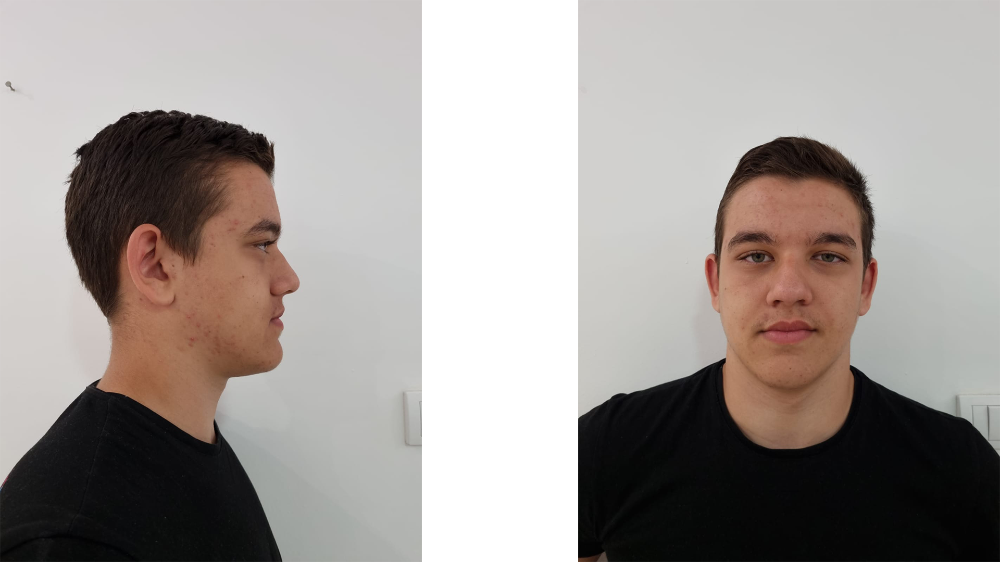

I was inspired by an astonishing artist Niyazi Selomoğlu for this one and I tried to replicate the head of his model. His works are always very unique and mysterious so I tried to do the same as good as possible. For the rest of the body I took many references of human anatomy and sculpted her form. I also did retopology of that model because i used it for another project where I animated her.
This was my first contact with Zbrush, where i had to create likeness 3D model based on a person i know.
Reference
I wanted to try something new and level up my knowledge in organic sculpting. This was an important project for me because I got to understand the importance of basic shapes and animal anatomy.